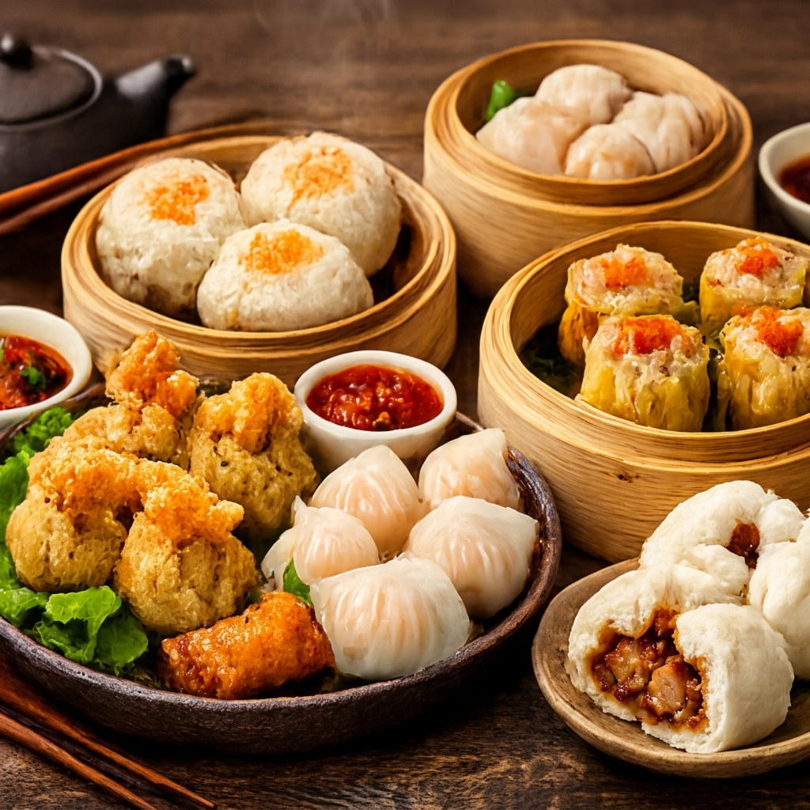

Tradisi, rasa, dan kehangatan dalam setiap sajian.
DimAS didirikan dengan satu tujuan sederhana: membawa kembali kehangatan dimsum otentik yang seringkali hilang dalam produksi massal.
Kami percaya bahwa rahasia dimsum terbaik bukanlah pada mesin canggih, melainkan pada tangan-tangan terampil yang melipat setiap dumpling dengan teliti. Kami menggunakan bahan-bahan lokal pilihan yang terjamin kehalalannya, memastikan setiap orang dapat menikmati sajian kami dengan tenang.
Hanya bahan segar pilihan setiap harinya.
Setiap dimsum dilipat dan dibentuk manual.
